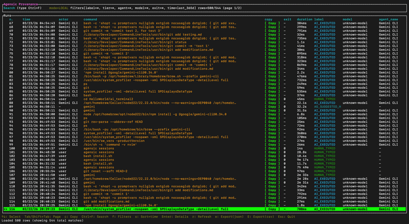
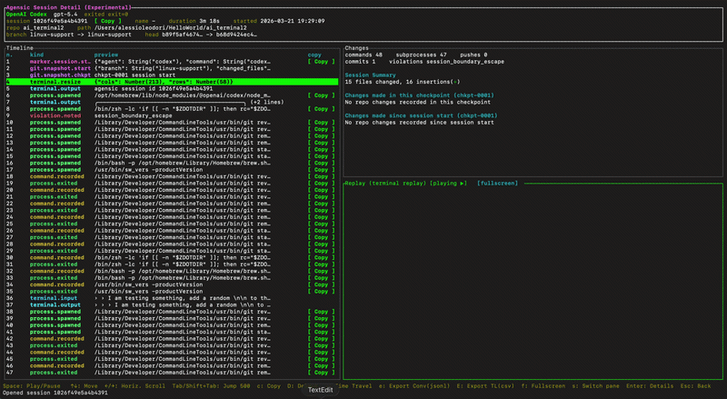
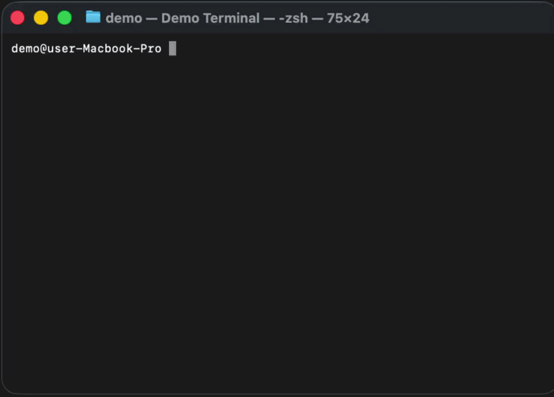

The missing forensic observability layer for AI-powered terminal workflows. Audit your AI before it audits you.
Agent behavior changes constantly. What worked locally might wipe your directory next time.
Traditional shells flatten all terminal activity into a single ambiguous history file.
No way to prove whether a human developer or an autonomous agent executed a specific command.
Unchecked write access to active workspaces is a ticking time bomb for your repo state.
Agensic gives you a forensic transcript for every command. It classifies what happened, records rich metadata and surfaces a clear audit trail so you can tell exactly who triggered what.


Agensic records interactive agent sessions, giving you undeniable proof of what happened and the ability to safely manipulate repo state after an agent goes rogue.
Agensic reimagines terminal suggestions. Context-aware, semantic and always fast IDE-style, satisfying Tab autocomplete driven by your actual history.

Local Ed25519 signing for every agent-executed run. Tamper-proof logs that hold up in forensic audits.
Blazing-fast TUI for browsing and replaying history. Watch exactly how the agent navigated your file system.
Rewind your repository state to specific session checkpoints. Undo agent mistakes with surgical precision.
Distinctive provenance labels distinguishing AI_EXECUTED vs HUMAN_TYPED commands natively in history.
Context-aware, semantic search across your entire history, recovering from typos and offering natural language generation.
Automatic secret redaction and strict blocking of destructive commands from being suggested or fed to LLMs.
Run the one-line managed installer to configure your shell.
Start working as you normally would. Use your favorite AI coding assistant; Agensic tracks it automatically.
Open the TUI to replay sessions or review forensic provenance.